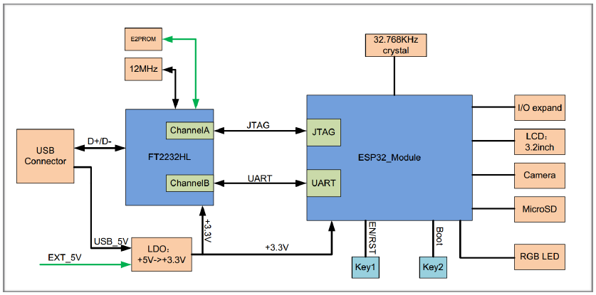
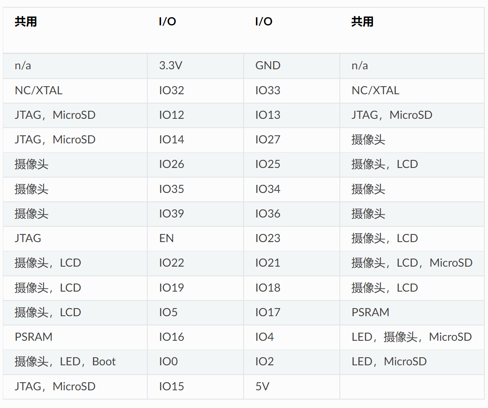

ESP-IDF 环境配置#
实验目的#
ESP-IDF 是乐鑫官方的物联网开发框架，适用于 ESP32、ESP32-S 和 ESP32-C 系列 SoC。它基于 C/C++ 语言提供了一个自给自足的 SDK，方便用户在这些平台上开发通用应用程序。
相较于 Arduino 等使用 microPython 的平台，ESP-IDF 能最大程度的发挥 ESP32 的全部实力，并且 ESP-IDF 是乐鑫官方推荐的 SDK，同时也是我们电子信息工程的学生应该掌握的开发工具之一。
本实验目的是搭建 ESP-IDF 的开发环境。
❗ 注意
本实验适用于同学们在自己的电脑上从头开始搭建环境，对于实验室电脑，实验环境已经搭建完毕，同学们只需阅读本节内容，了解 ESP-IDF 框架的基本内容即可。
ESP-WROVER-KIT 开发板简介#
概述#
ESP-WROVER-KIT 是 乐鑫 一款基于 ESP32 的开发板。开发板已集成了如下组件：
ESP32-WROVER-E 模组
LCD 屏
MicroSD 卡槽
此外，ESP-WROVER-KIT 的独特之处在于集成了一款先进多协议 USB 桥接器 (FTDI FT2232HL)，允许开发人员直接通过 USB 接口，使用 JTAG 对 ESP32 进行调试，无需额外的 JTAG 调试器。ESP-WROVER-KIT 可为开发人员提供简单、便捷且极具成本效益的开发体验。
为了便于使用，板上模组的绝大部分管脚均已引出至开发板的引脚。
❗ 注意
ESP32 的 GPIO16 和 GPIO17 管脚用作 PSRAM 的片选和时钟信号。默认情况下，为了给用户提供可靠的性能，这两个 GPIO 管脚不引出至开发板引脚。
电路框图#
ESP-WROVER-KIT 开发板的主要组件和连接方式如下图所示。

管脚分配#
ESP32 模组的部分管脚/终端已被板上组件占用或用于外部硬件设备。如果某管脚对应的特定硬件未连接，则该管脚可用作他用。比如，摄像头/JP4 排针未连接相应硬件，则这些 GPIO 可用于其他用途。
部分管脚具备多个功能，可供板上组件或外部硬件设备同时使用，比如 GPIO0 和 GPIO2。由于管脚限制，一些外围设备不可同时使用，比如，由于 JTAG 和 SD 卡槽需共用部分管脚，因此一些使用 SD 卡功能的应用无法同时进行 JTAG 调试。
其他情况下，不同外设可同时使用。比如，LCD 屏幕和 SD 卡仅共用一个 GPIO21 管脚，可以同时使用。该管脚可为 LCD 屏幕提供 D/C（数据/控制）信号，并用于读取来自 SD 卡槽的卡检测信号。如无需使用卡检测功能，开发人员还可以通过移除 R167 来禁用该功能。此时，LCD 和 SD 卡槽可同时使用。
管脚复用情况#

说明：
NC/XTAL - 32.768 kHz 晶振
JTAG - JTAG / JP2
Boot - Boot 按键 / SW2
摄像头 - 摄像头 / JP4
LED - RGB LED
MicroSD - MicroSD Card / J4
LCD - LCD / U5
PSRAM - ESP32-WROVER-E 的 PSRAM
32.768 kHz 晶振#
ESP32 管脚 |
|---|
GPIO32 |
GPIO33 |
默认情况下，管脚 GPIO32 和 GPIO33 已连接至晶振。因此，为了保证信号的完整性，这两个管脚并未连接至 JP1 I/O 连接器。用户可通过将 R11/R23 处的 0 欧电阻移至 R12/R24 处，以将 GP1O32 和 GPIO33 的连接从晶振移至 JP1。
SPI Flash / JP2#
ESP32 管脚 |
|---|
CLK / GPIO6 |
SD0 / GPIO7 |
SD1 / GPIO8 |
SD2 / GPIO9 |
SD3 / GPIO10 |
CMD / GPIO11 |
Important
模组的 flash 总线已通过 0 欧电阻 R140 ~ R145 连接至排针 JP2。如果需要将 flash 的工作频率控制在 80 MHz，以达到保证总线信号完整性等目的，建议移除 R140 ~ R145 电阻，将模组的 flash 总线与排针 JP2 断开。
JTAG / JP2#
ESP32 管脚 |
JTAG 信号 |
|---|---|
EN |
TRST_N |
MTMS / GPIO14 |
TMS |
MTDO / GPIO15 |
TDO |
MTDI / GPIO12 |
TDI |
MTCK / GPIO13 |
TCK |
摄像头 / JP4#
ESP32 管脚 |
摄像头信号 |
|---|---|
n/a |
3.3V |
n/a |
地 |
GPIO27 |
SIO_C / SCCB 时钟 |
GPIO26 |
SIO_D / SCCB 数据 |
GPIO25 |
VSYNC / 垂直同步 |
GPIO23 |
HREF / 水平参考 |
GPIO22 |
PCLK / 像素时钟 |
GPIO21 |
XCLK / 系统时钟 |
GPIO35 |
D7 / 像素数据 Bit 7 |
GPIO34 |
D6 / 像素数据 Bit 6 |
GPIO39 |
D5 / 像素数据 Bit 5 |
GPIO36 |
D4 / 像素数据 Bit 4 |
GPIO19 |
D3 / 像素数据 Bit 3 |
GPIO18 |
D2 / 像素数据 Bit 2 |
GPIO5 |
D0 / 像素数据 Bit 1 |
GPIO4 |
D0 / 像素数据 Bit 0 |
GPIO0 |
RESET / 摄像头复位 |
n/a |
PWDN / 摄像头断电 |
D0 到 D7 为摄像头的数据总线
RGB LED#
ESP32 管脚 |
RGB LED |
|---|---|
GPIO0 |
红色 |
GPIO2 |
绿色 |
GPIO4 |
蓝色 |
MicroSD 卡#
ESP32 管脚 |
MicroSD 信号 |
|---|---|
MTDI / GPIO12 |
DATA2 |
MTCK / GPIO13 |
CD / DATA3 |
MTDO / GPIO15 |
CMD |
MTMS / GPIO14 |
CLK |
GPIO2 |
DATA0 |
GPIO4 |
DATA1 |
GPIO21 |
Card Detect |
LCD / U5#
ESP32 管脚 |
LCD 信号 |
|---|---|
GPIO18 |
复位 |
GPIO19 |
SCL |
GPIO21 |
D/C |
GPIO22 |
CS |
GPIO23 |
SDA |
GPIO25 |
SDO |
GPIO5 |
背光 |
原理图#

实验准备#
硬件#
物联网实验验箱上的 ESP-WROVER-KIT 开发板
USB 数据线 (A 转 Micro-B)
电脑（PC 或 Mac OS）
软件#
Ubuntu20.04 Linux 操作系统
ESP-IDF 开发框架
实验步骤#
❗ 注意如果使用的是我们提供的镜像文件，安装好 VM16PRO 后打开即可。全新安装配置，请按照以下步骤操作。
第一步：安装准备#
首先是更换国内源，此处不再赘述，可以自行网络学习，Ubuntu20.04 有图形界面进行选择更换，十分简单。
然后更新软件列表，检测出可以更新的软件并进行软件更新，具体终端输入如下：
sudo apt-get update
sudo apt-get upgrade
编译 ESP-IDF 需要以下软件依赖包。
sudo apt-get install git wget flex bison gperf python3 python3-pip python3-setuptools cmake ninja-build cca
第二步：获取 ESP-IDF#
拉取 ESP-IDF 仓库。打开终端，运行以下命令：
mkdir -p ~/esp
cd ~/esp
git clone -b v4.4.1 --recursive https://github.com/espressif/esp-idf.git
ESP-IDF 将下载至 ~/esp/esp-idf。
❗注意：
此处因 GitHub 在国内下载速度不稳定，想要在自己电脑构建环境的同学们，针对 git clone 的下载问题可以先前往网址下载 zip 再放入虚拟机后解压。
也可以用国内提供的 GITTE 解决。
第三步：设置工具#
除了 ESP-IDF 框架本身，还需要安装 ESP-IDF 使用的各种工具，比如编译器、调试器、Python 包等。
采用 GitHub，执行如下命令
cd ~/esp/esp-idf
./install.sh esp32
采用备用资源
在运行install.sh时会下载 Github 发布版本中附带的一些工具，如果访问 Github 较为缓慢，则可以设置一个环境变量，实现优先选择 Espressif 提供的下载服务器进行 Github 资源下载。
cd ~/esp/esp-idf
export IDF_GITHUB_ASSETS="dl.espressif.com/github_assets"
./install.sh
第四步：设置环境变量#
此时，您刚刚安装的工具尚未添加至 PATH 环境变量，无法通过“命令窗口”使用这些工具。因此，必须设置一些环境变量，这可以通过 ESP-IDF 提供的另一个脚本完成。
为了正常使用 ESP-IDF 提供的工具，必须将这些工具所在的目录添加到系统环境变量，可通过终端键入如下命令实现。
. $HOME/esp/esp-idf/export.sh
❗注意：，命令开始的 “.” 与路径之间应有一个空格！
如果您需要经常运行 ESP-IDF，可以上述脚本命令创建一个别名，具体步骤如下：
复制并粘贴以下命令到 shell 配置文件中（.profile， .bashrc， .zprofile 等）
alias get-idf='. $HOME/esp/esp-idf/export.sh'
注意：这些文件在主目录下，并且需要开启查看隐藏文件

通过重启终端窗口或运行 source [path to profile]，如 source ~/.bashrc 来刷新配置文件。
source ~/.bashrc
现在您可以在任何终端窗口中运行 get-idf 来设置或刷新 esp-idf 环境。
get-idf
Detecting the Python interpreter
Checking "python3" ...
Python 3.9.13
"python3" has been detected
Checking Python compatibility
Checking other ESP-IDF version.
.....
Done! You can now compile ESP-IDF projects.
Go to the project directory and run:
idf.py build
这里不建议直接将 export.sh 添加到 shell 的配置文件。因为这会导致在每个终端会话中都激活 IDF 虚拟环境（包括无需使用 IDF 的情况），从而破坏使用虚拟环境的目的，并可能影响其他软件的使用。